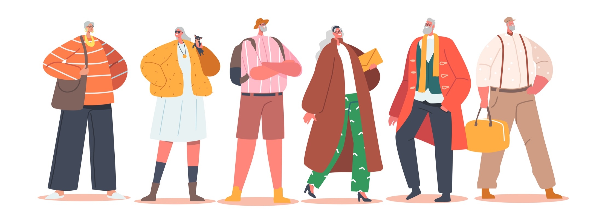
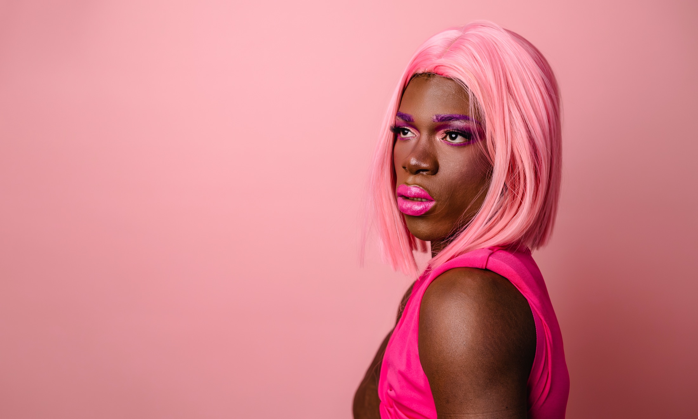
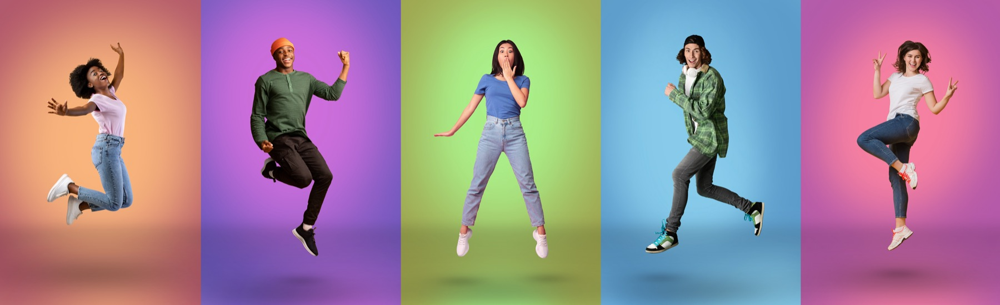

01
Tu montres ta tenue
Une photo de ta tenue, de ton armoire ou d'une pièce que tu veux porter.
Ton agent IA du matin
Ton agent IA qui t'aide à t'habiller chaque jour sans stress, sans pub, sans te pousser à acheter.
Le matin, tout va vite
7h12. Tu es en retard. Tu ouvres ton armoire. Tu regardes. Tu hésites. Et la même petite phrase revient.
Chaque matin difficile ajoute un stress avant même que la journée commence. Ce n'est pas un problème de vêtements, c'est un problème de charge mentale.

Dressing optimisé
Pas besoin de refaire ta garde-robe. Styleme.fr s’appuie sur tes habitudes, tes essentiels et tes pièces marquantes. Ta tenue sera adaptée à la météo, au rythme de ta journée et à ton agenda. Ton styliste personnel te proposera toujours une tenue stylée et facile à porter.
Styleme.fr réveille tes vêtements oubliés :


Comment cela fonctionne ?
Une photo de ta tenue, de ton armoire ou d'une pièce que tu veux porter.

Un avis court, bienveillant, avec un ajustement concret : couleur, chaussure, veste, accessoire.

Ton styliste personnel retient ce que tu aimes et ressort les bonnes idées au bon moment.

Conseil de style
Mon assistant beauté peut varier selon ton besoin : ton styliste personnel, styliste personnelle, assistant mode ou miroir bienveillant. Le ton reste simple, direct et adapté à toi.

Pas une appli shopping
Styleme.fr s'engage pour une consommation de la mode plus consciente : Matin simplifié. Dressing optimisé. Styles partagés. Communauté engagée.
Notre projet aide à révolutionner les habitudes des consommateurs : mieux utiliser ce que l'on possède déjà, limiter les achats réflexes et se positionner clairement contre la fast fashion.
Sources : ADEME, UNEP, Ellen MacArthur Foundation.
| Les autres apps | Styleme.fr |
|---|---|
| Te montrent 50 tenues par jour. | Te propose 2 ou 3 idées maximum. |
| Veulent que tu achètes. | T'aide avec ce que tu as déjà. |
| Sont remplies de pubs. | Zéro pub. |
| Oublient coiffure et maquillage. | Les intègre progressivement. |

Communauté engagée
Inspire-toi de personnes qui te ressemblent, sauvegarde les tenues qui marchent et redécouvre ton dressing sans tomber dans la surconsommation.
Slow fashion
Styleme.fr encourage les associations, les répétitions intelligentes et les pièces qui durent. Le meilleur achat est parfois celui que tu n'as pas besoin de faire.


Questions fréquentes
La bêta est gratuite. Ensuite, l'idée est un petit abonnement mensuel abordable, avec une version gratuite qui reste disponible.
Oui. Tes photos restent privées, ne sont pas partagées avec des marques et doivent pouvoir être supprimées facilement.
Non. Tu peux commencer avec une seule photo de ta tenue du jour. Le dressing se construit naturellement au fil du temps.
Pour commencer, c'est un site web accessible depuis ton téléphone. Pas besoin de télécharger quoi que ce soit.
C'est prévu progressivement. Les premiers testeurs pourront dire exactement ce dont ils ont besoin.
Oui, Styleme.fr fonctionne pour tous les adultes, quels que soient votre style, votre genre ou vos goûts : votre styliste personnel s’adapte à vous.
Accès en avant-première
Laisse ton e-mail et quelques mots : le formulaire prépare un message vers bonjour@styleme.fr pour rejoindre la liste.
Pas de spam. Juste une réponse quand le test ouvre.